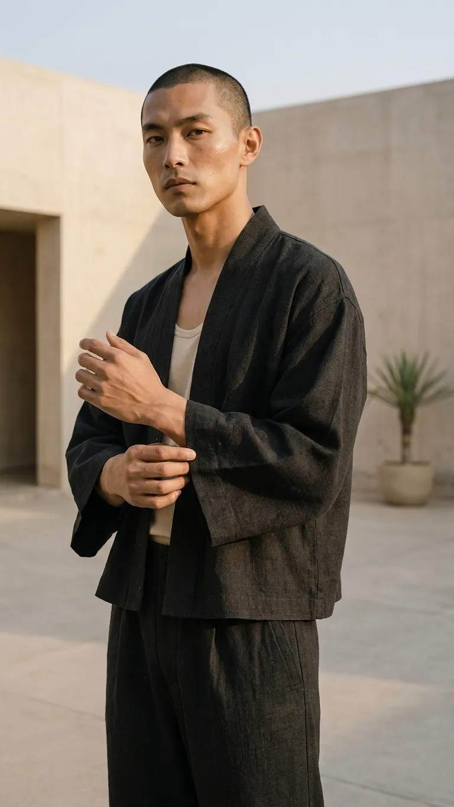

The house
A quest
A quest
for mastery
KADHAR bridges the heritage of rural Indian craftsmanship and the way people dress in cities today. We reject fast fashion in favour of unhurried intent: garments built to become modern heirlooms.
Minimal, gender-neutral silhouettes for people who move: ease of movement first, utility always, ornament never for its own sake.

Our standard
What every garment answers to.
01
Material wisdom
Handspun, handwoven cotton and natural fibre blends, chosen for how they breathe and age.
02
Plant-based colour
Indigos, earth browns and pale yellows drawn from natural dyes.
03
Small batches
Made at the pace of the loom, in limited drops, so nothing is overproduced.
Care
Cloth that improves with wear.
Wash cold, dry in shade, iron warm. Handwoven cotton softens with every wash; raw hems are meant to fray a little.
Hand wash cold
Dry in shade
Warm iron
Do not bleach